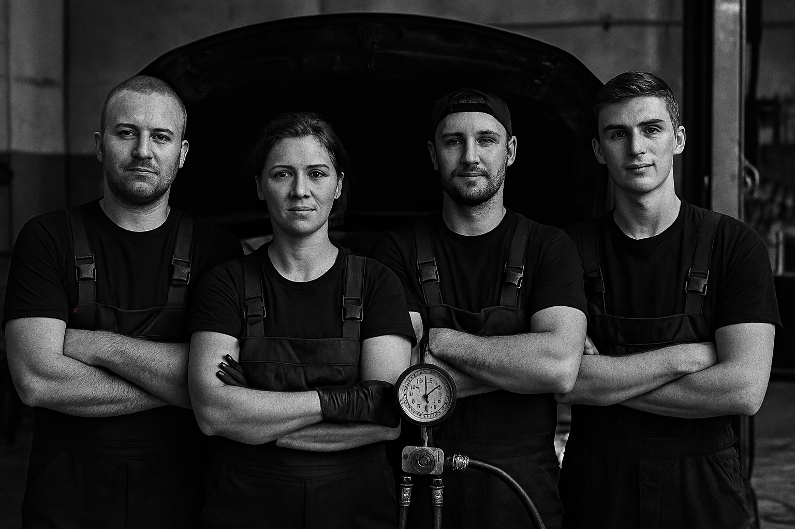

Welcome To
Mihail Catan Auto Repair
We are dedicated to providing top-notch auto repair services with honesty and integrity. Our experienced technicians are here to keep your vehicle running smoothly and safely. We offer a wide range of services, from routine maintenance to complex repairs, all at competitive prices. Your satisfaction is our priority, and we strive to exceed your expectations with every visit.
Book an Appointment
Available Services

Keep your engine running smoothly with our quick and affordable oil change service. We use high-quality oils to ensure optimal performance and longevity for your vehicle.

Ensure your safety on the road with our comprehensive tire services, including rotation, balancing, and replacement. We use high-quality tires to provide the best performance and longevity for your vehicle.

Keep your vehicle safe with our expert brake repair services. We diagnose and fix all brake issues, ensuring your car stops effectively and reliably every time, giving you peace of mind on the road.

Our skilled technicians provide comprehensive engine repair services to keep your vehicle running smoothly. From minor repairs to major overhauls, we have the expertise to handle all your engine needs.

Ensure your vehicle starts reliably with our battery service. We offer testing, replacement, and maintenance to keep your battery in top condition, preventing unexpected breakdowns.

Stay cool and comfortable with our air conditioning service. We diagnose and repair all AC issues, ensuring your vehicle's climate control system works efficiently, even in the hottest weather.
About Us
At Mihail Catan Auto Repair, we are passionate about providing exceptional auto repair services to our community. With years of experience in the industry, our team of skilled technicians is dedicated to ensuring your vehicle receives the best care possible. We pride ourselves on our honesty, integrity, and commitment to customer satisfaction. Whether you need routine maintenance or major repairs, we are here to keep your car running smoothly and safely. Moreover, we are proud to be a part of the local community and strive to give back through various initiatives and partnerships. Your trust is our greatest asset, and we look forward to serving you and your vehicle for years to come.
Customer Reviews
"Mihail Catan Auto Repair is the best! They fixed my car quickly and at a great price. The staff is friendly and knowledgeable. Highly recommend!"
"I had a great experience at Mihail Catan Auto Repair. They were honest about the repairs needed and didn't try to upsell me on services."
"The team at Mihail Catan Auto Repair is fantastic! They diagnosed my car's issue quickly and had it fixed the same day. I will definitely be returning for future repairs."
"I had a wonderful experience at Mihail Catan Auto Repair. The staff was friendly and professional, and they fixed my car quickly. I highly recommend their services!"
"Mihail Catan Auto Repair is my go-to shop for all my car needs. They are honest, reliable, and always do a great job. I wouldn't trust anyone else with my vehicle."
"I had a great experience at Mihail Catan Auto Repair. They were honest about the repairs needed and didn't try to upsell me on services. I highly recommend them!"